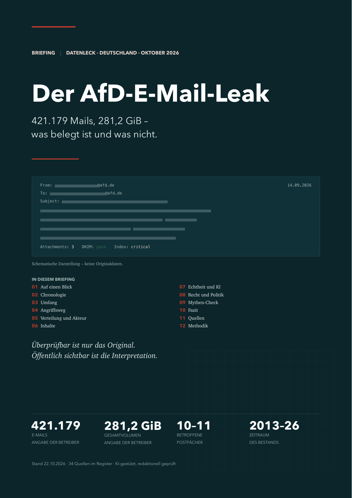

421.179 Mails, 281,2 GiB – was belegt ist und was nicht.
Am 19. Oktober 2026 ging hexane.cc online. Die AfD bestätigte
einen Angriff auf einen Hosting-Dienstleister. Das Briefing sortiert den
öffentlichen Kenntnisstand: was belegt ist, was plausibel erscheint – und
was bislang nur behauptet wird.
Öffentliche Quellen, Quellenstand 22.10.2026. Keine Torrent-, Magnet- oder Mirror-Links, keine personenbezogenen Daten aus dem Material.

Mails im Archiv – Angabe der Betreiber. Der öffentliche Index zeigt davon nur einen Ausschnitt.
Die AfD nennt „Ende September“, ein Sprecher „Anfang September“. Der Korpus endet am 14.09.
Die Signatur belegt Unverändertheit, nicht Wahrheit, Absender oder Zeitpunkt.
Zum Dokument: Das Briefing ist eine KI-gestützte Auswertung öffentlicher Quellen, redaktionell geprüft. Es wurden keine Leak-Daten heruntergeladen, gespeichert oder ausgewertet. Rechtsaussagen sind Einordnungen mit Quellen, keine Rechtsberatung. Der Quellenstand ist 22. Oktober 2026; Entwicklungen können überholt sein.
Hinweise auf Fehler sind willkommen – über die Issues im Repository.